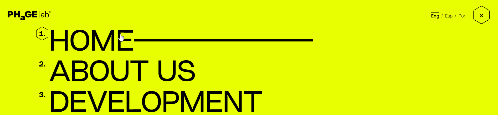
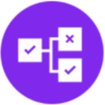
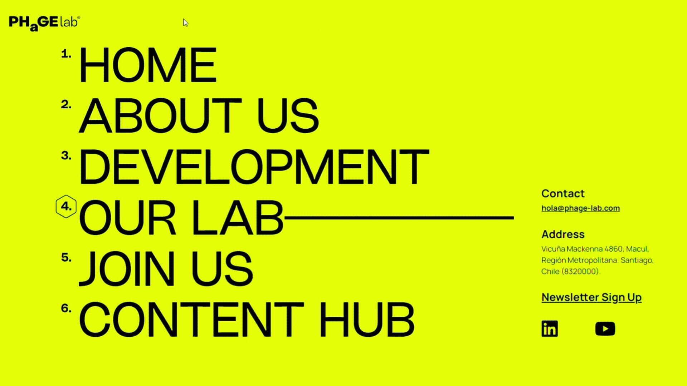

Triggers
Hovering the cursor above any section of the navigation starts the interaction.


Rules
When the user hovers above a navigation section, an animation plays, extending a black line rightward. When the user stops hovering, an animation plays, with the line sliding leftward to disappear.


Feedback
This microinteraction includes two piece of feedback. The line appearing beside the navigation text and a hexagon appearing around the navigation number both indicate to the user that they have selected a navigation item.
Loops and Modes
This microinteraction does not include any loops that automatically repeat, nor any alternative modes.